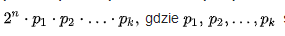
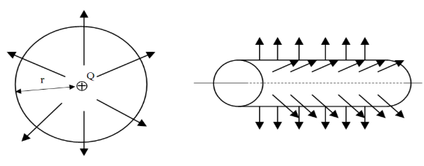

Carl Friedrich Gauss (ur. 30 kwietnia 1777 w Brunszwiku, zm. 23 lutego 1855 w Getyndze) – niemiecki matematyk, fizyk, astronom i geodeta. Uznawany jest za jednego z twórców geometrii nieeuklidesowej. Uważany jest za jednego z największych matematyków (obok Archimedesa i Newtona), przez sobie współczesnych określany był mianem „Księcia matematyków”. Gauss jako malec nauczył się czytać, a także samodzielnie opanował proste rachunki. Jak sam twierdził, nauczył się rachować, zanim jeszcze zaczął mówić. Jego geniusz matematyczny objawił się stosunkowo wcześnie, w wieku 3 lat umiał dodawać. Uzdolnionym chłopcem zainteresował się książę Brunszwiku Karol Wilhelm, który postanowił łożyć na jego dalszą naukę. Gauss zdobywał wiedzę w takich miejscach jak: - Collegium Carolinum w Brunszwiku - Uniwersytet w Getyndze - Uniwersytet w Helmsted Uniwersytet w Helmstedt nadał mu tytuł doktora in absentia, bez zwyczajowego egzaminu ustnego, na którym przedstawił napisaną pod naciskiem swojego dobroczyńcy rozprawę doktorską. Wykazał w niej prawdziwość zasadniczego twierdzenia algebry (był to pierwszy ścisły dowód tego twierdzenia).
Pierwsze odkrycie: Pierwszym ważnym odkryciem matematycznym Gaussa było podanie konstrukcji siedemnastokąta foremnegoprzy użyciu cyrkla i linijki. Udało mu się też pokazać, że wielokąt foremny daje się skonstruować przy pomocy cyrkla i linijki wtedy, gdy liczba jego boków da się przedstawić w postaci:  są liczbami pierwszymi postaci, gdzie j jest liczbą naturalną. Dzieła: W 1801 r. Gauss opublikował Disquisitiones arithmeticae (Badania arytmetyczne). W dziele tym opisał swoje odkrycia w dziedzinie teorii liczb, którą to cenił szczególnie i nazywał królową matematyki. Określił pojęcie kongruencji i wprowadził symbol tego pojęcia, którym systematycznie się posługiwał. W 1798 r. udowodnił jedno z podstawowych praw teorii liczb, zwane prawem wzajemności reszt kwadratowych. Do czasów Gaussa znana była tylko geometria na płaszczyźnie i na kuli. On zaś opisał geometrię dowolnej powierzchni, określając, które linie na danej powierzchni są odpowiednikami linii prostych oraz podając sposób pomiaru odległości na wybranej powierzchni. Podał definicję krzywizny powierzchni i udowodnił niezwykle ważne twierdzenie, któremu nadał nazwę twierdzenia wybornego.Mówiło ono, że krzywizna powierzchni jest niezmiennikiem wszelkich przekształceń, które nie zmieniają odległości mierzonych na tej powierzchni. Z tego twierdzenia wynika na przykład, że żadnego obszaru sfery nie można spłaszczyć zachowując jednocześnie odległości punktów, ponieważ krzywizna sfery jest różna od krzywizny płaszczyzny.
Idee Gaussa wpłynęły również na rozwój fizyki. Jednym z większych sukcesów było wprowadzenie absolutnego układu jednostek magnetycznych. Dokonał tego wraz z niemieckim fizykiem Wilhelmem Weberem. Później, w roku 1829 podał zasadę najmniejszego przymusu. W latach prowadził badania nad teorią potencjału, stanowiące rozszerzenie prawa Coulomba. Interesował się również elektromagnetyzmem: w roku 1833. wspólnie z Weberem zbudował pierwszy telegraf elektromagnetyczny.
Gauss jest też autorem wielu pojęć związanych z optyką. Wprowadził pojęcia takie jak: oś optyczna soczewki, odległość ogniskowa, ognisko, środek soczewki. Możemy się z nimi spotkać w „Teorii optyki”, której jest autorem. Fizyk podał również podstawowe elementy konstrukcji obrazu optycznego przy przechodzeniu światła przez układ soczewek.
Gauss osiągnął również ważne wyniki w dziedzinie astronomii. 1 stycznia 1801 astronom włoski Giuseppe Piazzi odkrył pierwszą planetoidę, Ceres, która po 6 tygodniach obserwacji zbliżyła się do Słońca i zniknęła w jego blasku. Na podstawie zgromadzonych danych Gauss, układając i rozwiązując równanie ósmego stopnia, obliczył orbitę Ceres, co umożliwiło ponowne zlokalizowanie planetoidy. Następnie wyliczał orbity dla kolejnych odkrywanych planetoid: Pallas, Juno i Westy. Badał też wiekowe perturbacje planet. Rezultaty swoich badań astronomicznych zebrał w książce Theoria Motus Corporum Coelestium in Sectionibus Conicus Solem Ambietium (Teoria ciał niebieskich obiegających Słońce po orbitach stożkowych, 1809). Zaprezentował w niej między innymi wymyśloną przez siebie, jeszcze w okresie nauki w Brunszwiku, metodę najmniejszych kwadratów.
Po 1820 r. Gauss zajął się tematyką związaną z geodezją, a dokładniej z matematycznym problemem związanym z określeniem kształtu i rozmiarów Ziemi. Aby zwiększyć dokładność danych, Gauss skonstruował przyrząd, tzw. heliotrop, w którym wykorzystuje się promienie Słońca do pomiaru krzywizny. Jego badania związane z teorią błędów doprowadziły w 1823 do odkrycia rozkładu normalnego zmiennej losowej] (nazywany także rozkładem Gaussa), który jest najważniejszym rozkładem w teorii prawdopodobieństwa.